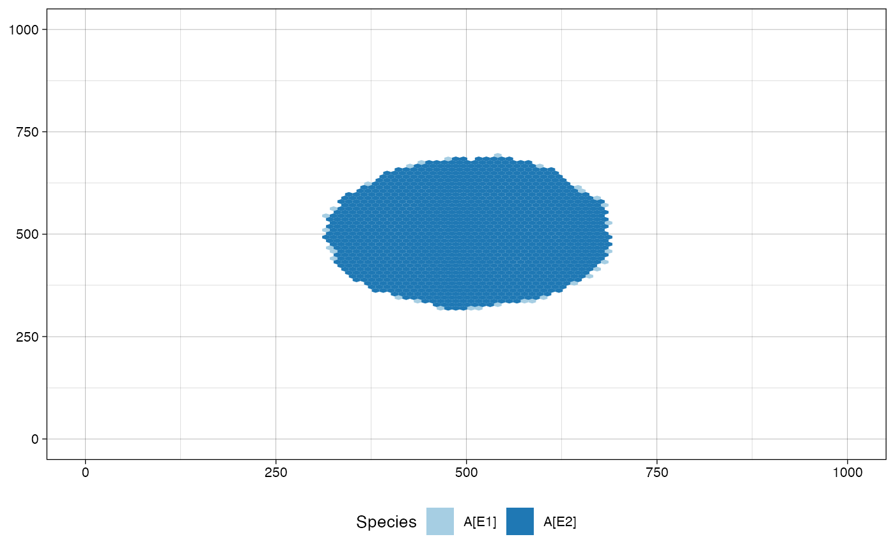
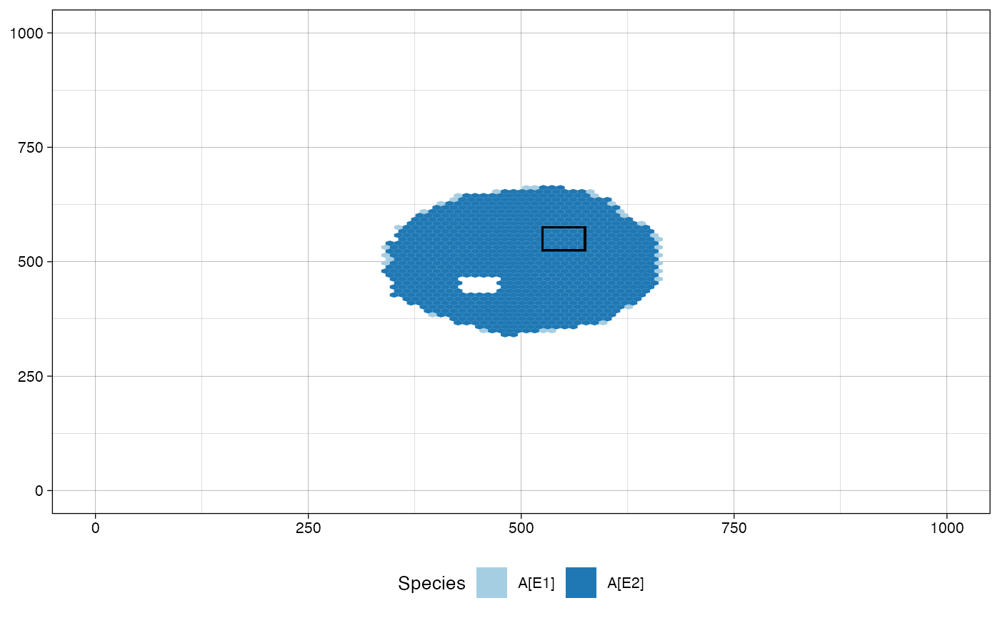
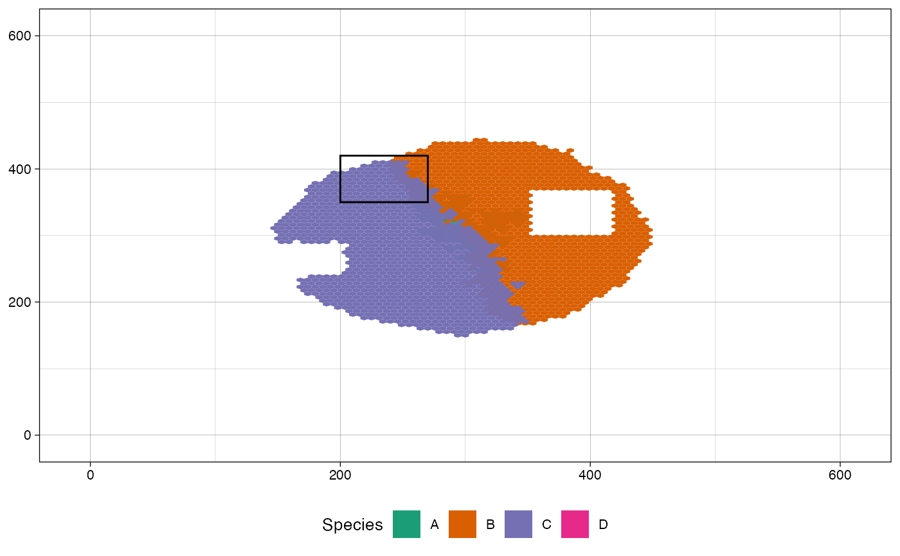
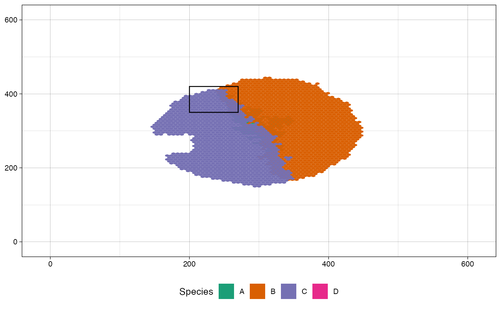
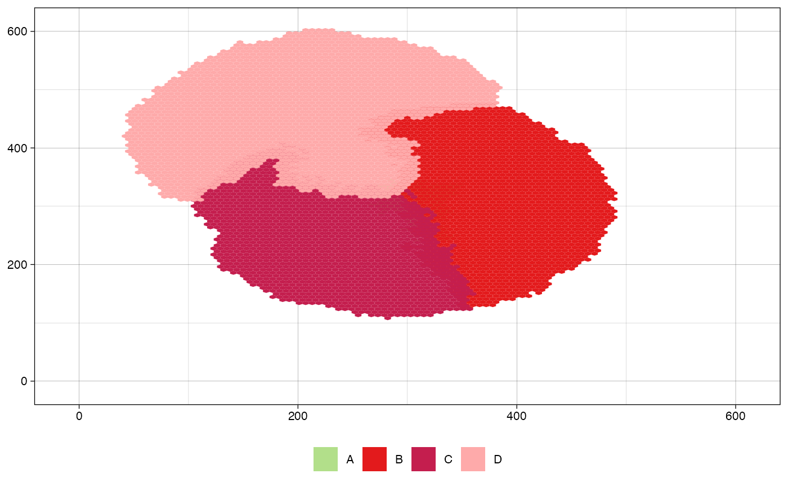
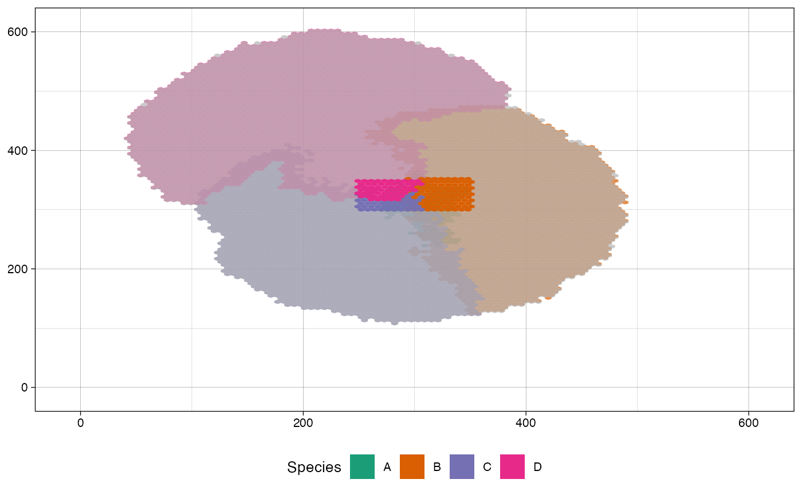
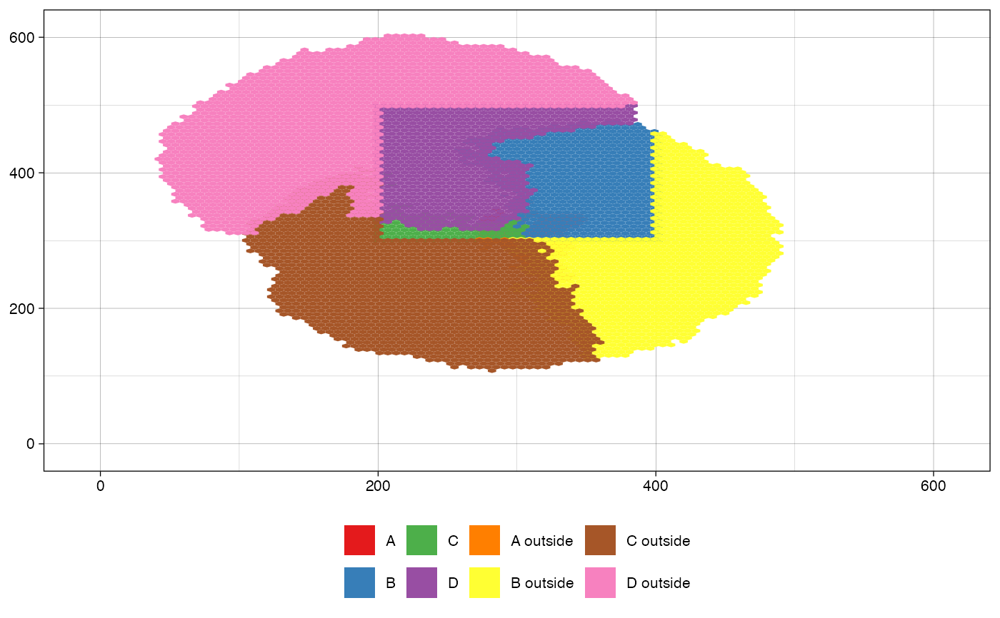

This function plots the tissue
Arguments
- simulation
A simulation object.
- num_of_bins
The number of bins (default: 100).
- before_sample
A sample name. When provided, this function represents the tissue as appeared just before the specified sampling. The parameters
before_sampleandat_sampleare mutually exclusive (optional).- at_sample
A sample name. When provided, this function represents the tissue as appeared when the specified sampling was about to be collected. The parameters
before_sampleandat_sampleare mutually exclusive (optional).- plot_next_sample_regions
A Boolean value. When
before_sampleis set andplot_next_sample_regionsis set to beTRUE, this function plots the regions of the samples collected at the same simulated time of the specified sample. When, instead,at_sampleis set andplot_next_sample_regionsis set to beTRUE, the function plots the regions of the samples collected at the same simulated time of the specified sample, but not before the specified sample (default:FALSE).- plot_sample_region
A Boolean value. When either
at_sampleorbefore_sampleare set andplot_sample_regionis set to beTRUE, the function also plots the region of the specified sample (default:TRUE).- color_map
A named vector representing the color of the labels map (optional when
label_functionisNULL; mandatory, otherwise).- list_all_labels
A Boolean flag to show all labels in the legend (default:
FALSE).- label_function
A function whose input is the result of
TissueSimulation$get_cells()color_map. Iflabel_functionis specified, thencolor_mapbecomes mandatory. When the parameter is set toNULL, the cells are labelled by their species names (default:NULL).- focus_function
A function whose input is the result of
TissueSimulation$get_cells()FALSEthe corresponding cells is plotted in grey. When the parameter is set toNULL, all tumour simulation cells are colored (default:NULL).- alpha_function
A function whose input is the result of
TissueSimulation$get_cells()NULL, all tumour simulation cells have alpha level1(default:NULL).
Details
This function represents cells distribution over a tissue. Each cells is
labelled and colored according to its label (see parameter
label_function). The tissue is draws as a heatmap of hexagonal bins for
efficiency porpoise.
Examples
# set the seed
set.seed(0)
# build a tissue simulation
sim <- TissueSimulation(width = 600, height = 600)
# avoid drift
sim$death_activation_level <- 50
# add the mutant A
sim$add_mutant("A", c(duplication = 0.12, death = 0.05))
# place a cell in the tissue and simulate it until 10 cells
sim$place_cell("A", 300, 300)
sim$run_up_to_size("A", 10, quiet = TRUE)
# add the mutant B and let mutate a border cell of A in B
sim$add_mutant("B", c(duplication = 0.145, death = 0.06))
sim$mutate_progeny(sim$choose_border_cell_in("A"), "B")
# simulate the tissue up to 30 cells in B
sim$run_up_to_size("B", 30, quiet = TRUE)
# add the third mutant and let one cell of A mutate into C
sim$add_mutant("C", c(duplication = 0.15, death = 0.06))
sim$mutate_progeny(sim$choose_border_cell_in("A"), "C")
# simulate the tissue until C consists of 25000 cells
sim$run_up_to_size("C", 25000, quiet = TRUE)
# collect the sample "S1"
sim$sample_cells("S1", c(145, 230), c(215, 300))
# let the simulation reach 25000 cells in C again
sim$run_up_to_size("C", 25000, quiet = TRUE)
# collect two samples
sim$sample_cells("S2", c(350, 300), c(420, 370))
sim$sample_cells("S3", c(200, 350), c(270, 420))
# add a further mutant and derive it from B
sim$add_mutant(name = "D", c(duplication = 0.8, death = 0.01))
sim$mutate_progeny(sim$choose_border_cell_in("B"), "D")
# let the tumour evolve until the mutant C and D cumulatively
# consist of 10000 cells
sim$run_until(sim$var("C") + sim$var("D") == 1e5, quiet = TRUE)
# plot the tissue in the current status
plot_tissue(sim)

# plot the tissue as it was when "S3" was about to be sampled
plot_tissue(sim, at_sample = "S3")

# plot the tissue as it was when "S3" was about to be sampled and
# highlight the regions of the samples collected at the same
# simulated time, but not before it, i.e., "S3"
plot_tissue(sim, at_sample="S3",
plot_next_sample_regions = TRUE)

# plot the tissue as it was just before sampling "S3"
plot_tissue(sim, before_sample="S3")

# plot the tissue as it was just before sampling "S3" and highlight
# the regions of the samples collected at the same simulated time,
# i.e., "S2" and "S3"
plot_tissue(sim, before_sample="S3",
plot_next_sample_regions = TRUE)
# define a custom color map
color_map <- c(A="#B2DF8A", B="#E31A1C", C="#C41E4E", D="#FEAAAA")
names(color_map) <- c("A", "B", "C", "D")
plot_tissue(sim, color_map = color_map)

# this function returns `TRUE` for cells in the rectangle
# [200,400]x[300,500]
focus_function <- function(cells) {
(cells$position_x >= 200 & cells$position_x <= 400
& cells$position_y >= 300 & cells$position_y <= 500)
}
# plot the tissue highlighting the region [200,400]x[300,500]
plot_tissue(sim, focus_function = focus_function)

# this function labels cells. Inside the rectangle
# [200,400]x[300,500] the label is the cell's mutant name.
# Outside, the rectangle label is cell's mutant name with
# "outside" attached.
label_function <- function(cells) {
library(dplyr)
cells %>%
mutate(label = if_else(cells$position_x >= 200
& cells$position_x <= 400
& cells$position_y >= 300
& cells$position_y <= 500,
.data$mutant,
paste(.data$mutant, "outside"))) %>%
pull(label)
}
# get the plot labels (i.e., mutants + paste(mutants, "outside"))
mutants <- sim$get_mutants() %>% dplyr::pull(mutant)
labels <- c(mutants, paste(mutants, "outside"))
# create a color map for the labels
color_map <- RColorBrewer::brewer.pal(n = length(labels), name = "Set1")
names(color_map) <- labels
# plot the tissue labelling the cells according to
# `label_function`. The parameter `color_map` is mandatory.
plot_tissue(sim, label_function = label_function, color_map = color_map)
